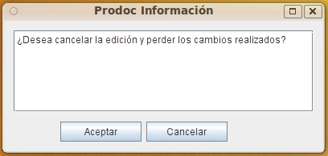

La opción de Cancel Checkout CANCELA todos los cambios que se han realizado sobre un documento y elimina las copias de trabajo del usuario en el servidor.

Ver: CheckIn (Bloquear Documento para editar) y CheckOut (Confirmar cambios en Documento Bloqueado)